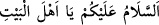

Nûşirevan’a: “Ağır yükleri taşıyıp da yük olan kimseyle düşüp kalkmaya tahammül
edemeyen bir adam hakkında ne dersin?” diye sorulunca şöyle cevap verdi: “Bu adam
yükü bütün organlarıyla taşır. Yük olan kimseyi ise yalnız ruha ağırlık yapar.”
Denilir ki: “Asil/fazîlet sahibi kimselerin huzuruna girenin hakkı, az konuşmak ve
çabuk kalkmaktır.” Gereğinden fazla oturmak ve vakitsiz gelmek ahmak kimsenin
alâmetlerindendir.
Ulemâ demişlerdir ki: Kişi bir müslüman kardeşinin kapısına geldiğinde üç defa izin
ister ve her defasında: “__WORD__ (Allâh’ın selamı sizin üzerinize olsun ey
hâne halkı)” der. Sonra da: “Falanca içeri gelebilir mi?” der. Her selâm vermesinden
sonra yemek yiyenin yemeği, abdest alanın abdestini, namaz kılanın dört rekat namazını
tamamlayacağı kadar bir müddet bekler. Ona izin verilirse içeri girer ve ziyaretini kısa
tutar. Aksi halde gönlünde hiç bir kin ve düşmanlık hissi olmadan geri döner. Ev
sahibinin haber verdiği ve dâvet ettiği kimsenin izin istemesi gerekli değildir.
Keşfü’l-esrâr’da şöyle denilmiştir: “Edeb sözün sonu, hâlin başlangıcıdır. Hak Teâlâ
Hz. Mustafâ (s.a.)’i önce edeble süsledi, sonra insanlara gönderdi. Nitekim O (s.a.)
şöyle buyurmuştur: “Beni Rabbim terbiye etti, terbiyemi de ne güzel eyledi.”[271] Avâm
halkın her görünen uzvu için bir edeb vardır. Bu edebe uymazlarsa helâk olurlar. Havâs,
yâni seçkin kulların görünmeyen her uzvu için bir edeb vardır. Onlar da buna
uymazlarsa helâk olurlar. Hâssu’l-hâs, yâni en seçkinlerin ise her hâl ve vaktinde ayrı
bir edebe riâyet etmeleri gerekir.”
Molla Câmî şöyle der:
Ey dostlar nefsi terbiye ediniz,
Aşk yolları tümüyle edebdir.
Sonsuz nîmetin sermayesi edebdir,
Akıl yüksekliğinin sermâyesi edebdir.
Kulluğun adâleti nedir?
Allâh’ın yasaklarının sınırında durmaktır.
Sözü, işi, duymayı ve görmeyi,
Şerîat terazisinde ölçmektir.
Hakk, halk, şeyh, arkadaş ve yoldaş ile,
Yolun gereğine göre yolculuk etmektir.
Uzuvların ve organların hareketleri,
Hidâyet dîninin hükmüne göre düzgün hâle getirmektir.
Düşünceleri ve vehimleri
Tamâmen nefsin kirlerinden temizlemektir.
Din ve İslâm, bir talebin edebindedirler,
Küfür ve tuğyan ise edepsizliğin uğursuzluğundandır.
Güzel edeplere ve güzel bulunan işlere muvaffakiyet Allah’tandır.